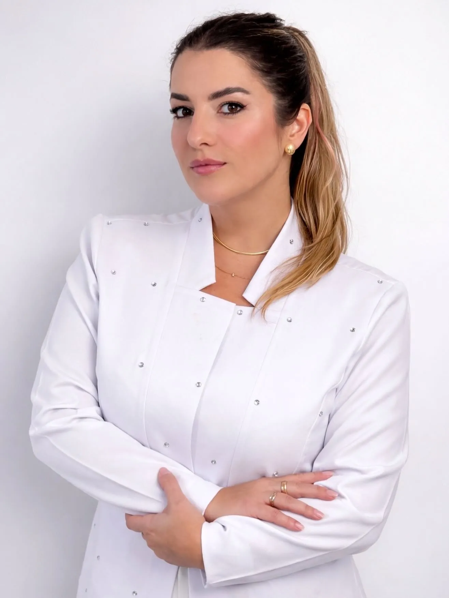
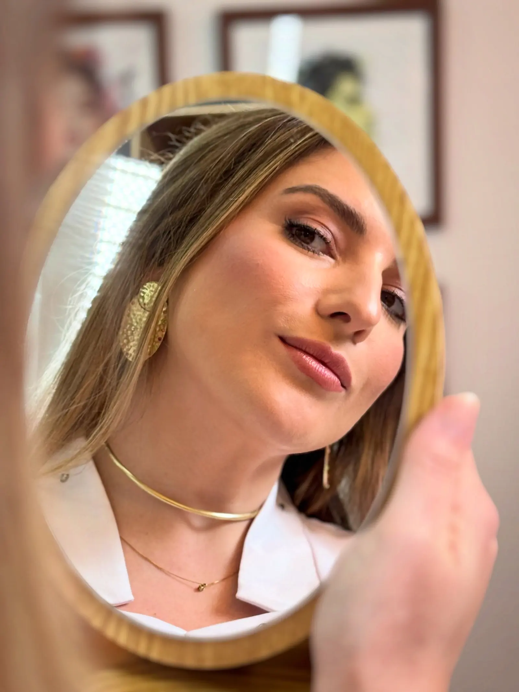

Cirurgiã-Dentista Tubarão/SC
Um cuidado que começa por conhecer você.
Conheça o atendimento da Dra. Mariane Piassa em harmonização orofacial e prótese dentária e converse sobre o que você procura.
- Registro profissional
- CRO/SC 25626
- Formação informada
- Mestre e Especialista
- Experiência
- +13 anos
Dados do perfil público da profissional; validação final e biografia completa pendentes.

Quem atende
Sou Mariane Piassa, cirurgiã-dentista em Tubarão.
Este é um espaço para você conhecer minha atuação e entrar em contato para conversar sobre uma consulta. Atendo em harmonização orofacial e prótese dentária, com atenção ao que cada pessoa procura.
Texto provisório, sujeito à revisão e aprovação da profissional.
Áreas de atuação
Duas frentes, um mesmo olhar para a pessoa.
-
Harmonização Orofacial
Atendimento voltado à harmonia da face, a partir da conversa sobre o que a pessoa procura e das suas características individuais.
Conversar sobre esta área -
Prótese Dentária
Atendimento voltado à reabilitação do sorriso com próteses dentárias, conforme a avaliação individual de cada caso.
Conversar sobre esta área
Descrições provisórias, sujeitas à revisão e aprovação da profissional.
Consulta individualizada
Cada pessoa chega com uma história e uma expectativa.
A proposta desta página é apresentar o atendimento e facilitar o primeiro contato. Converse sobre como funciona a consulta e combine o atendimento.
- 01
Conhecer você
Uma conversa inicial sobre quem você é e o que traz para o atendimento.
- 02
Entender o que você procura
Suas expectativas e dúvidas fazem parte da conversa.
- 03
Combinar o próximo passo
Horários e funcionamento da consulta são confirmados no contato.
Contato
Vamos conversar sobre o seu cuidado?
Solicitar agendamento pelo WhatsAppO contato pelo WhatsApp serve para combinar o atendimento. O agendamento depende de confirmação.
Onde atende
Seven Business Center5º andar · sala 501
Rua Tubalcain Faraco, 150 — Centro
Tubarão/SC · CEP 88701-150 Ver rota no mapa
- WhatsApp +55 48 98821-7613
- Instagram @dra.marianepiassa
Endereço, horários e dados finais a confirmar antes da publicação.